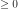
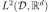
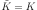
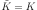
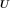
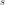

KarhunenLoeveSVDAlgorithm¶
(Source code, png, hires.png, pdf)
{kind=link}
{kind=link}
- class KarhunenLoeveSVDAlgorithm(*args)¶
Computation of Karhunen-Loeve decomposition using SVD approximation.
- Available constructors:
KarhunenLoeveSVDAlgorithm(sample, s, centeredFlag)
KarhunenLoeveSVDAlgorithm(sample, verticesWeights, s, centeredFlag)
KarhunenLoeveSVDAlgorithm(sample, verticesWeights, sampleWeights, s, centeredFlag)
- Parameters
- sample
ProcessSample The sample containing the observations.
- verticesWeightssequence of float
The weights associated to the vertices of the mesh defining the sample.
- sampleWeightssequence of float
The weights associated to the fields of the sample.
- sfloat, 
The threshold used to select the most significant eigenmodes, defined in
KarhunenLoeveAlgorithm.- centeredFlagbool
Flag to tell if the sample is drawn according to a centered process or if it has to be centered using the empirical mean. The default value is False.
- sample
Notes
The Karhunen-Loeve SVD algorithm solves the Fredholm problem associated to the covariance function
 : see
: see KarhunenLoeveAlgorithmto get the notations.The SVD approach is a particular case of the quadrature approach (see
KarhunenLoeveQuadratureAlgorithm) where we consider the functional basis of  defined on by:
by:The SVD approach is used when the covariance function is not explicitely known but only through
 fields of the associated stochastic process
fields of the associated stochastic process  : .
: .It consists in :
approximating
 by its empirical estimator where and  if the process is centered and otherwise, where ;
by its empirical estimator where and  if the process is centered and otherwise, where ;taking the
 vertices of the mesh of as the quadrature points.
vertices of the mesh of as the quadrature points.
We suppose now that , and we note .
As the matrix is invertible, the Galerkin and collocation approaches are equivalent and both lead to the following singular value problem for
 :
:(1)¶
The SVD decomposition of writes:
where we have , , such that :
,
,
.
Then the columns of  are the eigenvectors of
 associated to the eigenvalues .
associated to the eigenvalues .We deduce the modes and eigenvalues of the Fredholm problem for :
We have:
The most computationally intensive part of the algorithm is the computation of the SVD decomposition. By default, it is done using LAPACK dgesdd routine. While being very accurate and reasonably fast for small to medium sized problems, it becomes prohibitively slow for large cases. The user can choose to use a stochastic algorithm instead, with the constraint that the number of singular values to be computed has to be fixed a priori. The following keys of
ResourceMapallow to select and tune these algorithms:‘KarhunenLoeveSVDAlgorithm-UseRandomSVD’ which triggers the use of a random algorithm. By default, it is set to False and LAPACK is used.
‘KarhunenLoeveSVDAlgorithm-RandomSVDMaximumRank’ which fixes the number of singular values to compute. By default it is set to 1000.
‘KarhunenLoeveSVDAlgorithm-RandomSVDVariant’ which can be equal to either ‘halko2010’ for [halko2010] (the default) or ‘halko2011’ for [halko2011]. These two algorithms have very similar structures, the first one being based on a random compression of both the rows and columns of
, the
second one being based on an iterative compressed sampling of the columns of
.‘KarhunenLoeveSVDAlgorithm-halko2011Margin’ and ‘KarhunenLoeveSVDAlgorithm-halko2011Iterations’ to fix the parameters of the ‘halko2011’ variant. See [halko2011] for the details.
Examples
Create a Karhunen-Loeve SVD algorithm:
>>> import openturns as ot >>> mesh = ot.IntervalMesher([10]*2).build(ot.Interval([-1.0]*2, [1.0]*2)) >>> s = 0.01 >>> model = ot.AbsoluteExponential([1.0]*2) >>> sample = ot.GaussianProcess(model, mesh).getSample(8) >>> algorithm = ot.KarhunenLoeveSVDAlgorithm(sample, s)
Run it!
>>> algorithm.run() >>> result = algorithm.getResult()
Methods
Accessor to the object's name.
Accessor to the covariance model.
getId()Accessor to the object's id.
getName()Accessor to the object's name.
Accessor to number of modes to compute.
Get the result structure.
Accessor to the process sample.
Accessor to the weights of the sample.
Accessor to the object's shadowed id.
Accessor to the threshold used to select the most significant eigenmodes.
Accessor to the weights of the vertices.
Accessor to the object's visibility state.
hasName()Test if the object is named.
Test if the object has a distinguishable name.
run()Computation of the eigenvalues and eigenfunctions values at nodes.
setCovarianceModel(covariance)Accessor to the covariance model.
setName(name)Accessor to the object's name.
setNbModes(nbModes)Accessor to the maximum number of modes to compute.
setShadowedId(id)Accessor to the object's shadowed id.
setThreshold(threshold)Accessor to the limit ratio on eigenvalues.
setVisibility(visible)Accessor to the object's visibility state.
- __init__(*args)¶
- getClassName()¶
Accessor to the object’s name.
- Returns
- class_namestr
The object class name (object.__class__.__name__).
- getCovarianceModel()¶
Accessor to the covariance model.
- Returns
- covModel
CovarianceModel The covariance model.
- covModel
- getId()¶
Accessor to the object’s id.
- Returns
- idint
Internal unique identifier.
- getName()¶
Accessor to the object’s name.
- Returns
- namestr
The name of the object.
- getNbModes()¶
Accessor to number of modes to compute.
- Returns
- nint
The maximum number of modes to compute. The actual number of modes also depends on the threshold criterion.
- getResult()¶
Get the result structure.
- Returns
- resKL
KarhunenLoeveResult The structure containing all the results of the Fredholm problem.
- resKL
Notes
The structure contains all the results of the Fredholm problem.
- getSample()¶
Accessor to the process sample.
- Returns
- sample
ProcessSample The process sample containing the observations of the process.
- sample
- getSampleWeights()¶
Accessor to the weights of the sample.
- Returns
- weights
Point The weights associated to the fields of the sample.
- weights
Notes
The fields might not have the same weight, for example if they come from importance sampling.
- getShadowedId()¶
Accessor to the object’s shadowed id.
- Returns
- idint
Internal unique identifier.
- getThreshold()¶
Accessor to the threshold used to select the most significant eigenmodes.
- Returns
- sfloat, positive
The threshold .
Notes
OpenTURNS truncates the sequence
 at the index defined in (3).
at the index defined in (3).
- getVerticesWeights()¶
Accessor to the weights of the vertices.
- Returns
- weights
Point The weights associated to the vertices of the mesh defining the sample field.
- weights
Notes
The vertices might not have the same weight, for example if the mesh is not regular.
- getVisibility()¶
Accessor to the object’s visibility state.
- Returns
- visiblebool
Visibility flag.
- hasName()¶
Test if the object is named.
- Returns
- hasNamebool
True if the name is not empty.
- hasVisibleName()¶
Test if the object has a distinguishable name.
- Returns
- hasVisibleNamebool
True if the name is not empty and not the default one.
- run()¶
Computation of the eigenvalues and eigenfunctions values at nodes.
Notes
Runs the algorithm and creates the result structure
KarhunenLoeveResult.
- setCovarianceModel(covariance)¶
Accessor to the covariance model.
- Parameters
- covModel
CovarianceModel The covariance model.
- covModel
- setName(name)¶
Accessor to the object’s name.
- Parameters
- namestr
The name of the object.
- setNbModes(nbModes)¶
Accessor to the maximum number of modes to compute.
- Parameters
- nint
The maximum number of modes to compute. The actual number of modes also depends on the threshold criterion.
- setShadowedId(id)¶
Accessor to the object’s shadowed id.
- Parameters
- idint
Internal unique identifier.
- setThreshold(threshold)¶
Accessor to the limit ratio on eigenvalues.
- Parameters
- sfloat,

The threshold defined in (3).
- sfloat,
- setVisibility(visible)¶
Accessor to the object’s visibility state.
- Parameters
- visiblebool
Visibility flag.